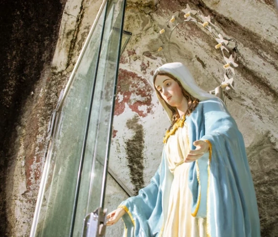
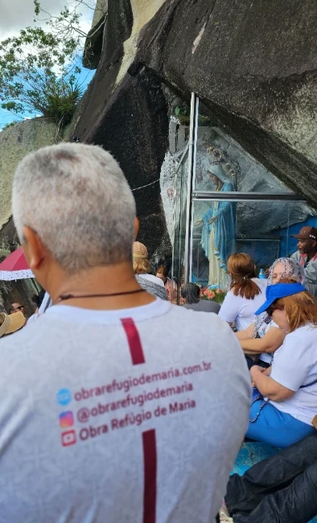
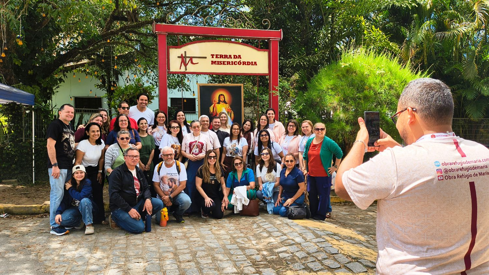

Local da Aparição
Cimbres · Pesqueira – PE
Subimos juntos a escadaria até a gruta no alto da serra, onde Nossa Senhora apareceu. Lá em cima há tempo para o terço e a oração pessoal aos pés da Virgem.
Viva uma jornada de oração, encontro e graça.
A Obra Refúgio de Maria convida você para dias de alegria e bênçãos aos pés de Nossa Senhora.

Em 1936, no alto da Serra do Ororubá, em Cimbres, distrito de Pesqueira, Nossa Senhora apareceu a duas meninas, Maria da Luz e Maria da Conceição. Pediu oração, penitência e conversão. Desde então, peregrinos de todo o Brasil sobem a serra para rezar no local da aparição.
Nossa missão é tornar Jesus mais conhecido e amado por meio de Maria. Por isso caminhamos juntos até ela, em comunidade, com momentos de oração e partilha ao longo de toda a viagem.
Participe com a gente e conheça esse lugar onde o céu tocou a terra.

Transfer incluso para todos os passeios. Você só precisa levar o coração aberto.
Cimbres · Pesqueira – PE
Subimos juntos a escadaria até a gruta no alto da serra, onde Nossa Senhora apareceu. Lá em cima há tempo para o terço e a oração pessoal aos pés da Virgem.
Visita com o grupo
Um lugar dedicado a Jesus Misericordioso, onde grandes milagres já foram alcançados.
Visita incluída no roteiro
Um castelo de pedra no meio de um lago, cercado pelas serras do agreste. A visita lembra Santa Helena, a mãe do imperador Constantino que encontrou a Santa Cruz.
Cuidamos de cada detalhe da viagem para que você possa se dedicar ao que importa: rezar e viver esse encontro com Nossa Senhora.
Quero participarA família Refúgio de Maria reunida na Terra da Misericórdia, durante a peregrinação a Cimbres em setembro de 2026.

A inscrição é confirmada assim que o pagamento é concluído. Escolha a forma que for melhor para você.
R$2.370
Pagamento único, com o melhor valor
Você será direcionado ao WhatsApp da nossa equipe, que vai concluir o pagamento da sua viagem com você.
Pagar via PIXR$2.495
Em até 8x sem juros
Você será direcionado à nossa página de pagamentos. Ao concluir, sua inscrição já estará confirmada.
Pagar com cartãoDatas, valores, local de saída ou qualquer outra informação: fale com a nossa equipe pelo WhatsApp.
(85) 99757-1941
Conversar no WhatsApp